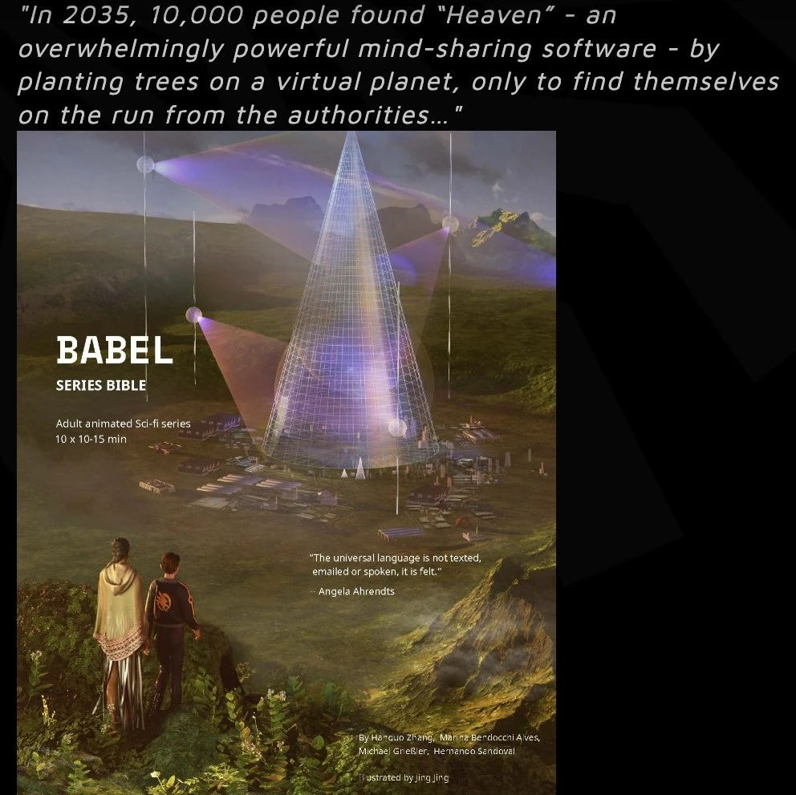

SeeDAO 孵化官宣 | BabelDAO
作者: SeeDAO
分类:
SeeDAO孵化
“共创科幻IP” 领域全球最优秀的线上社区

BabelDAO 是一个共创并治理“巴别宇宙”的线上社区。社区的核心团队、活跃内容创作者大多来自北美。Babel Universe（巴别宇宙）是一个共创科幻IP，它开始于一个问题 “如果存在一种能连通我们心灵的‘世界语言’，我们和我们的世界会有什么不同？”， 并以此为主题衍生出：50余篇故事、一部正在被奥斯卡提名工作室制作的动画剧集、一个与世界各地展出的沉浸式体验（赛罗：心灵之镜）、一套代表“巴别宇宙”公民身份的可升级SBT。在脑机接口、大语言模型盛行的今天，“巴别宇宙”一直在讨论的“世界语言”概念逐渐成为现实，也让对这一科技概念的人文探讨变得更加重要。“巴别宇宙”计划包含100个分支，也可以理解为100个平行宇宙或星球。任何人可以基于“巴别宇宙”的主线故事，创设并发展自己的故事线，与其他故事交织在一起。每个故事线都好似发生在一个独特的星球上。早期的内容贡献者将会主导其中的一个星球，进一步发展其知识产权(IP)。目前，美国工作室正在制作的动画剧集，正是基于这个联合创作的英文科幻故事发展起来的“巴别宇宙”的主线故事。BabelDAO 在“共创科幻IP” 领域，是全球最优秀的社区，有一批优秀的内容创作者，持续产出内容。Babel Universe(巴别宇宙）这个 IP 也获得了行业头部公司的认可，正在快速推进 IP 商业化，近期也会有成果官宣。我们上一次看到这么优秀的共创项目，还是硅谷新秀StoryCo。此次SeeDAO参与孵化BabelDAO，将从多个方面对BabelDAO给予支持，SeeDAO 很多社区成员都参与了 BabelDAO 的共创；SeeDAO 全球网络在海外各个城市的线下活动，帮助 BabelDAO 拓展共创参与者的网络。在今年3月份 SeeDAO 纽约线下活动 “SeeU in NYC: 强AI对人类社会的冲击”, 4月份SeeDAO在香港主办的DAO Hongkong，BabelDAO 的核心贡献者们都参与了活动，并跟 SeeDAO 社区的小伙伴探讨了如何共创科幻IP。此后，SeeDAO 很多社区成员都参与了 BabelDAO 的共创，BabelDAO 的成员也加入 SeeDAO。此次孵化后，BabelDAO也将加入SeeDAO生态。内容来源 ｜ Shawn
排版 ｜小姚
审核 ｜Ines